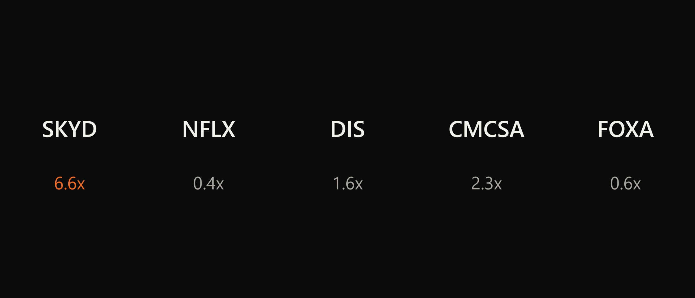
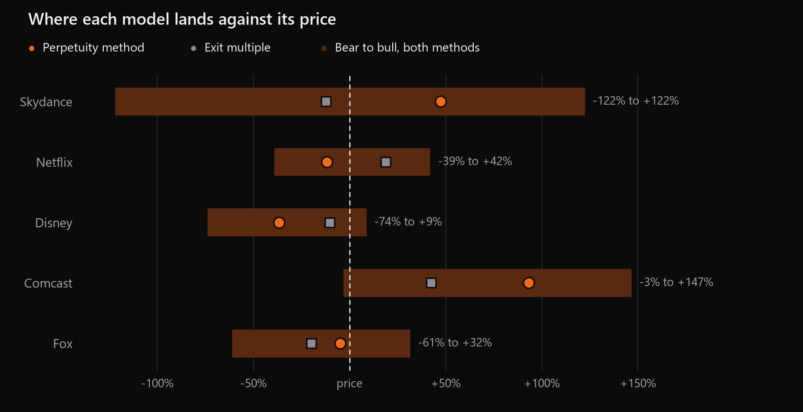
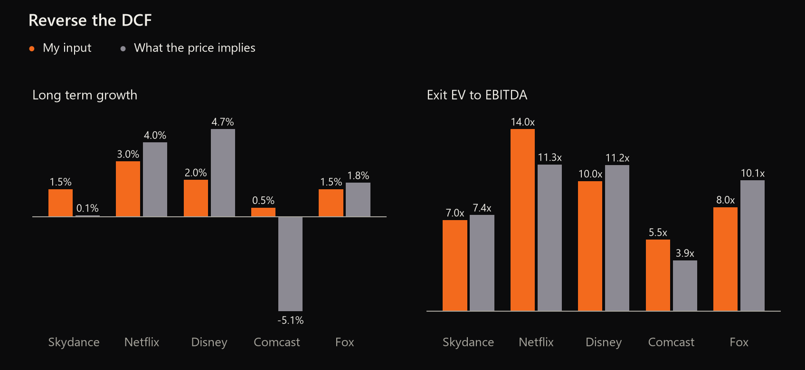
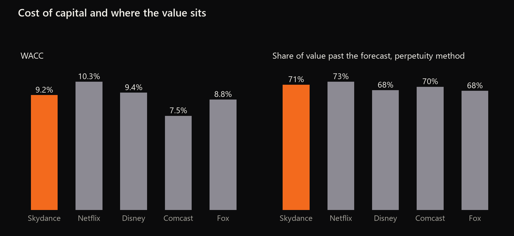

Media DCF models and credit comps.

Five media companies, valued the same way and read as credits.
In short
- The question
- Which of five media companies can carry its debt?
- Data and method
- Five DCF models on one template from SEC filings, then a credit comparison.
- What I found
- Skydance is far past the rest, at 6.6 times leverage and 2.0 times coverage. Fox went from 0.6 to 3.3 times when it bought Roku.
- What it means
- Cash flow alone does not get Skydance to 3.0 times. Fox gets there by fiscal 2028, but only if it holds off on buybacks.
One template, five companies, and what each price already assumes
Companies on one DCF template, with the same rules.
Formulas across the models and the comps workbook, zero errors.
Skydance net debt to EBITDA. Fox is next at 3.3, now that it owns Roku.
Skydance EBITDA to interest. The other four cover 4 to 22 times.
EBITDA miss that wipes out Skydance's equity at the November 24 price.
Skydance leverage by 2031 on cash flow. The target is 3.0 by 2029.
| Company | Net debt to EBITDA | WACC | Market EV to EBITDA | Perpetuity, base | Exit multiple, base | Market price | Growth the price implies | Exit multiple the price implies | Terminal share |
|---|---|---|---|---|---|---|---|---|---|
| Skydance | 6.6x | 9.2% | 9.3x | $9.58 | $5.70 | $6.50 | 0.1% | 7.4x | 71% |
| Netflix | 0.4x | 10.3% | 15.1x | $52.02 | $69.97 | $58.87 | 4.0% | 11.3x | 73% |
| Disney | 1.7x | 9.4% | 10.5x | $77.72 | $109.82 | $122.51 | 4.7% | 11.2x | 68% |
| Comcast | 2.3x | 7.5% | 4.9x | $49.05 | $36.13 | $25.38 | -5.1% | 3.9x | 70% |
| Fox with Roku | 3.3x | 8.8% | 10.7x | $59.59 | $50.24 | $62.62 | 1.8% | 10.1x | 68% |
Reversing each DCF gives the growth and multiple the price already assumes. Comcast is priced as if cash flow shrinks 5 percent a year forever. The Fox price is the average of its two share classes. Nothing here is a recommendation to buy or sell anything.
Move the inputs and watch the value move
Scales every year of cash flow and the terminal value. The credit view below uses the same miss.
Value per share, perpetuity method
Value per share, exit multiple method
Perpetuity value against the market price
Share of value past the forecast
Net debt to first year EBITDA
Equity left at today's multiple after the EBITDA change
Same formulas as the Excel models: mid year discounting, a stub for the first year, the equity bridge off net debt and other claims. Skydance includes the warrant dilution above $12. The bear and bull scenarios in the models also change revenue and margins, which this slider does not.
The same five, read the way a desk reads them
| Company | Net debt to EBITDA | EBITDA to interest | Free cash flow after interest to net debt | Net debt share of enterprise value | DCF equity over net debt | EBITDA miss that wipes out the equity | Spread to Treasury on the cost of debt | S&P rating, where sourced |
|---|---|---|---|---|---|---|---|---|
| Skydance | 6.6x | 2.0x | 1% | 71% | 0.6x | -29% | 309 bp | BB |
| Netflix | 0.4x | 22.3x | 135% | 3% | 30.1x | -97% | 85 bp | A |
| Disney | 1.7x | 11.7x | 21% | 15% | 3.5x | -82% | 75 bp | A |
| Comcast | 2.3x | 8.4x | 18% | 47% | 2.2x | -53% | 95 bp | A minus, on watch |
| Fox with Roku | 3.3x | 3.9x | 13% | 28% | 2.4x | -71% | 145 bp | BBB |
Skydance fails every test the others pass. Net debt is 71 percent of enterprise value, and free cash flow after interest is close to zero in year one. Fox's spread is its own November new issue and Skydance's rests on October levels. The other three are my inputs.
Can Skydance and Fox pay it down
Skydance first. With every free dollar going to debt, net leverage is 5.9 times at the end of 2027, 4.6 at the end of 2029 and 4.0 at the end of 2031. Reaching 3.0 at today's EBITDA means cutting about $44 billion.

Skydance net leverage, year by yearBase case. Neither line reaches the target.
Fox wants gross leverage of 2.25 to 3.0 times within two years. On my base case it is 2.9 at the end of fiscal 2028 with no buybacks and 3.4 with $1.5 billion a year. Management says buybacks resume.

Fox gross leverage, year by yearBase case. Buybacks push the target out two years, to fiscal 2030.
Five charts, one per question

Leverage and coverageSkydance stands alone on both. Fox is now second. 
The equity cushionSkydance hits zero at a 29 percent miss, Comcast at 53, Fox at 71. 
Where each DCF lands against its priceComcast's range sits almost entirely above its price. 
Reverse the DCFComcast and Disney are the two I disagree with most. 
Cost of capital and terminal value shareTwo thirds or more of every valuation sits past the forecast.


Why I built this
I covered the Paramount Skydance tender at Finsight, then watched the market reprice every bond it had when the Warner Bros. Discovery debt was sold. One company on its own does not tell you whether that price is fair. So I built four peers the same way and read all five as credits.
What I would watch
- Free cash flow after interest. About $0.4 billion in year one of my base case, before $1.1 billion of dividends. The fourth quarter will be the first combined report.
- Asset sales or equity. Getting to 3.0 times means cutting about $44 billion of net debt. The $1 billion of equity in October is 2 percent of that.
- The first liens. The 7.05 percent notes traded at 272 bp on October 13, per Debtwire, 170 bp wide of the BBB index. I have found no published level since the stock fell to $6.50. With this little equity under them, I expect them to react to the stock more than a BBB bond would.
- Fox. Whether buybacks come before debt, and whether Roku's margin gets past 15 percent. The 10 year came at 145 bp on November 10, and the two year term loan is the first thing to repay.
- The other three. Netflix and Disney carry less than 2 times leverage. Comcast is at 2.3 times and nearly half its capital is debt, with the spin still ahead.
What is the same and what is not
- Same discount rate inputs. 10 year Treasury 4.91 percent, equity risk premium 4.5 percent, cash tax 23 percent, market weights, Hamada relevering. Cost of debt 75 to 145 bp over Treasuries for the four investment grade names, 8 percent blended for Skydance.
- Same cash flow definition. Adjusted EBITDA less stock compensation, cash restructuring, cash taxes on profit after tax depreciation, capex and a working capital and content line. Stock compensation is a real cost in all five, and it comes out once.
- Same mechanics. Mid year discounting, a first year stub, perpetuity and exit multiple side by side, three scenarios on one switch.
- Different fiscal years. Disney and Fox run FY2027 to FY2032 with stubs of 0.85 and 0.60. The other three run calendar 2026 to 2031 with a 0.10 stub.
- Different pending deals. Comcast is modeled before the NBCUniversal and Sky spin. Fox includes Roku and Skydance includes Warner Bros. Discovery, because both have closed.
- Interest expense. Gross, for all five. Disney is reported. Netflix and Comcast are annualized from 2026 filings. Fox is the new coupons plus its first quarter. Skydance is about $6 billion, quoted from its 10-Q.
What I got wrong first
First I used quoted betas as if they were unlevered. Netflix came out at an 11.6 percent WACC and $42 a share, and Comcast's unlevered beta fell below that of a utility. I set the betas by hand, at 0.6 for Fox, 0.7 for Comcast, 0.9 for Skydance, 1.05 for Disney and 1.2 for Netflix, and recorded the reasoning on each WACC sheet.
Then the one a desk would catch first. I had the four investment grade names borrowing at 5 to 5.5 percent with the 10 year at 4.95. That is 5 to 55 bp of spread, and nobody in investment grade prices there. I moved them to 75 to 125 bp over Treasuries. The change has little effect on three of them and takes $3 off Comcast, because half its capital is debt.
On October 26 I checked those inputs on a terminal against where each name's long dated debt trades. Disney, Netflix and Fox were close enough. Comcast was the miss. After three agencies placed it on negative watch for the spin, the market had it wider than my 95 bp by a margin that would not surprise a desk. Moving Comcast's cost of debt to the market level lifts its WACC to 7.8 percent and takes about $2 more off the perpetuity value. It does not change any conclusion, because the model still lands well above the price. The levels themselves are not published on this site.
The last one took me until November. Fox, Netflix and Comcast report EBITDA after stock compensation, and my template took it out again. That cost Comcast about $5 a share, Fox $4 and Netflix $1. At Disney I left out corporate costs and added back amortization that segment income already excludes, so EBITDA was $2.3 billion too high. The Excel files also still had the old cost of debt. All of it is fixed, on the pages and in the files.
Since the models
- One date. All five are on November 24 prices and a 4.91 percent 10 year. October used 4.95.
- Fox. Rebuilt with Roku, which closed on November 6. I had written that it would close in the first half of 2027 at the earliest. See the Fox page.
- Skydance. On the $87 billion of debt it reported on November 9. The stock went from $8.70 that day to $6.50. See the Skydance page.
- Disney. On its reported fiscal 2026, after corporate costs.
- Netflix and Comcast. Stock compensation counted once, and the real Netflix share count.
- The market. The ICE investment grade index was 97 bp on November 23, from 92 on November 17. Reuters, on LSEG data, had $1.88 trillion of investment grade sales through November 4, a record.